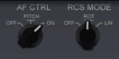

ISSを離れ、逆噴射して周回軌道を離脱します。
Delta Gliderには再突入を補助するオートパイロットが搭載されていません。
そのため、フライトスティック無しで再突入・着陸するのはとても難しい作業です。
一部のMOD機体には再突入を補助・自動化する機能が搭載されています。
マウスキーボードのみでプレイするのであれば、こうしたMODの導入をおすすめします。
Ctrlを押しながらDを押す。
ドッキングポートを離れる。
RCSを使って少し距離を取る。
RCS LINにしてテンキーの9を押す。
Kを押してノーズコーンを閉じる。
Hを押してOrbit HUDに切り替える。
Map MFDを開く。
北米のケープ・カナベラルを目的地に設定する。
TGTをクリック。
矢印キーで項目を移動する。
Spaceports→Cape Canaveralを選択。
Enterを押す。
地図上に、目標地点を示す目印が表示される。
Orbiter2010では白い十字、2016では黄色い二重円となっている。
着陸地点が昼の側に来るのを待つ。
タイムワープで時間経過させる。
DSPをクリック。
開いた画面でMODをクリック。
Orbit linesをGroundtrackにしておく。
タイムワープが原因で表示が遅い場合は、MFDを再起動する。
PWRボタンを2回クリックする。
タイミングを待って逆噴射する。
大気圏内に降下する軌道にする。
宇宙船の軌道が目的地に一番近づくタイミングを探す。
タイムワープで時間経過させる。
最接近まであと1周になったら、タイムワープを解除する。
目標地点から見て、地球の裏側に移動する。
Map MFD右下のDstの数字を確認する。
Dstが最大になるとき、宇宙船は目標地点のちょうど裏側にいる。
| BSE | Base | 基地 |
| Dst | Distance | 距離 |
| Brg | Bearing | 方位 |
タイムワープで時間経過させると、Dstの数字は大きくなっていく。
Dstの数字が減り始めたら、地球の裏側を通り過ぎたということ。
少し通り過ぎた程度なら問題ないので、そのまま逆噴射する。
ISSから帰還する場合、インド洋上空になることが多い。
Orbit MFDを開く。
RetroGrade or RET-Gをクリック。
機首を後ろに向ける。
メインエンジンを噴射する。
PeAを40km程度に下げる。
つまり、目的地の近くの大気圏内にPeが来るようにする。
噴射が終わったらRetroGradeを解除する。
基地のVORと、滑走路のILSの周波数を入力する。
Ctrlを押しながらIを押す。
Object infoのダイアログを開く。
左上のドロップダウンメニューをクリック。
Orbiter2010ならSpaceportを選択。
Orbiter2016ならBaseを選択。
右でCape Canaveralを選択する。
1枚目がOrbiter2010、2枚目が2016
ILSはRunway 33/15を使用する。
（33番/15番滑走路）
COM/NAV MFDを開く。
NAV1を112.70にする。
NAV2を134.20にする。
基地の上空を通過するように、針路を変更する。
Map MFDとSurface MFDを開いておく。
AF CTRLがONになっているのを確認する。
RCS MODEをROTに切り替える。

Surface MFDでHUDをクリック。
Surface HUDに切り替える。
高度を確認しながら時間経過させる。
高度100kmが近づいてきたら、タイムワープを解除する。
ProGradeをクリック。
機首を前に向ける。
前を向いたら、ProGradeを解除する。
Deleteキーを押し続ける。
エレベータートリムを最大まで上げる。
UPが機首上げ、DNが機首下げを意味する。
高度100km以下では、宇宙船は大気の影響を受ける。
機首上げした状態で機体を傾けると、少しずつ針路が変わる。
機体を左右に90°傾けることで、南北に針路を変えることができる。
Map MFD上の自分の軌道が、目的地と重なるようにする。
同時に高度を下げる。
緑色の線が目的地の少し先で途切れるように調整する。
機体を90°傾けたままにすると、高度が下がっていく。
傾きを水平に戻すと高度が上がる。
機体を左右に傾けて、針路と高度を調整する。
このとき、緑の線が目的地の先まで伸びるようにする。
| XR2 Ravenstar | Orbiter2016 | 迎え角を制御するオートパイロットが搭載されている。 Aerobrake MFDと併用すれば、マウスキーボードでも狙った場所に正確に降下できる。 |
| Shuttle Fleet | Orbiter2010 | スペースシャトルを再現したMOD。 再突入から着陸までを全自動で実行できる。 |